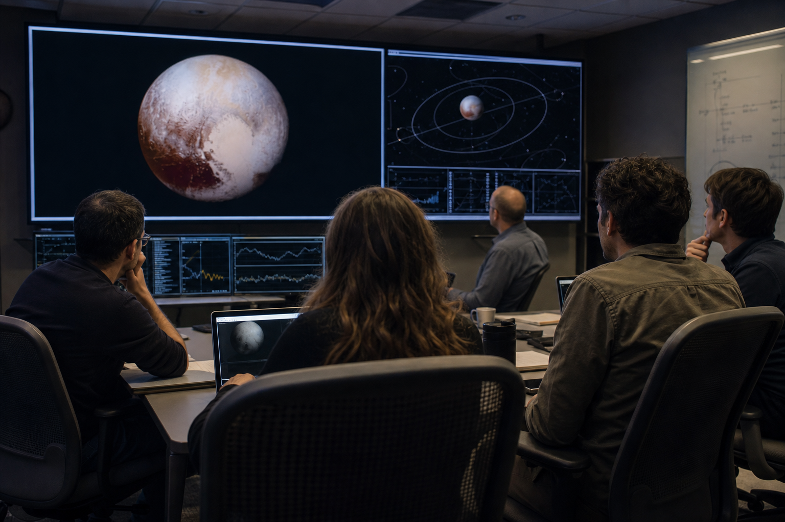

Pluto has been reinstated as the ninth planet, according to a mock memorandum circulated by the Interplanetary Classification Review Board late Thursday, ending two decades of awkward mnemonic repairs and restoring order to classroom posters everywhere.
The decision follows a 19-month review of observational records, orbital behavior, icy-body etiquette, and what one panel member called "the unmistakable gravitational dignity of a world with five moons and a heart on its face." The board's final recommendation argues that Pluto satisfies a newly proposed standard known as the Contextual Planetary Respect Test.
Under that test, a body may be granted planet status if it is round, orbits the Sun, maintains a compelling geological personality, and has been unfairly roasted in middle-school worksheets for more than fifteen consecutive years. Pluto passed all four criteria with what reviewers described as "icy confidence."

Why the Vote Changed
The review centers on a reinterpretation of the controversial "cleared its neighborhood" requirement. According to the new paper, Pluto did not fail to clear its orbital neighborhood; it simply lives in a shared outer-system district with strong community values and limited parking.
"If Earth had to clear every asteroid, satellite, and lost upper-stage booster from its broader social circle, we would all be having a very different conversation." Dr. Selene Voss, fictional chair of the review panel
The document also cites New Horizons-era imagery, which revealed complex terrain, atmospheric haze, nitrogen ice plains, and enough charisma to sustain several generations of science-fair tri-folds. While none of this changes Pluto's actual scientific classification, it makes the satirical case feel beautifully official.
The New Planetary Checklist
Pluto is rounded by its own gravity, which remains the universe's most professional shaping tool.
Its 248-year path around the Sun is eccentric, dramatic, and technically still an orbit.
Public attachment was found to be statistically massive, even after controlling for nostalgia.
Reaction Around the Solar System
Earth-based educators were seen calmly reprinting worksheets. Museum shops reportedly moved "ninth planet" merch from the back room to the respectable front shelf. Uranus welcomed Pluto back, while Saturn requested that everyone remember who still has the best ring system.
The loudest celebration came from mnemonic traditionalists, who can once again say "My Very Educated Mother Just Served Us Nine Pizzas" without ending the sentence in a procedural footnote.